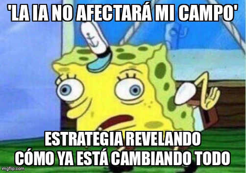

estrategIA #27 ·
Eso no afectará a mi sector
El contexto
La afirmación de que la IA no cambiará un ámbito profesional se enfrenta al balance de los primeros seis meses de estrategIA. La postura burlona de Bob Esponja cuestiona esa confianza a partir de los cambios recogidos por la newsletter.
Publicado en: estrategIA #27 Seis meses de avances y retos en IA: la perspectiva única de estrategIA
Leer el texto de la imagen
'LA IA NO AFECTARÁ MI CAMPO' ESTRATEGIA REVELANDO CÓMO YA ESTÁ CAMBIANDO TODO
Marca de la herramienta visible en el original: imgflip.com.